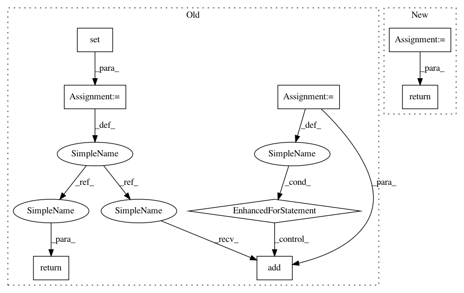

13f71c5eec807cbd8a368686fa7acd8d78be2303,networkml/featurizers/funcs/host.py,Host,_row_keys,#Host#Any#,577
Before Change
class Host(HostBase, Features):
def _row_keys(self, row):
keys = set()
for field in ("eth.src", "eth.dst"):
val = row.get(field, None)
if not val:
continue
if not self._is_unicast(val):
continue
keys.add(val)
return keys
def pyshark_ipv4(self, rows):
return self._pyshark_ipv4(rows)
After Change
class Host(HostBase, Features):
def _row_keys(self, row):
return {val for val in (row.get("eth.src", None), row.get("eth.dst", None)) if val and self._is_unicast(val)}
def pyshark_ipv4(self, rows_f):
return self._pyshark_ipv4(rows_f)
In pattern: SUPERPATTERN
Frequency: 3
Non-data size: 8
Instances
Project Name: CyberReboot/NetworkML
Commit Name: 13f71c5eec807cbd8a368686fa7acd8d78be2303
Time: 2020-03-19
Author: josh@vandervecken.com
File Name: networkml/featurizers/funcs/host.py
Class Name: Host
Method Name: _row_keys
Project Name: eth-cscs/reframe
Commit Name: 639af9a9c1bf22a02fed70ea4286510ac4a02297
Time: 2019-11-20
Author: manitaras@cscs.ch
File Name: reframe/core/schedulers/slurm.py
Class Name: SlurmJob
Method Name: get_all_nodes
Project Name: eth-cscs/reframe
Commit Name: 639af9a9c1bf22a02fed70ea4286510ac4a02297
Time: 2019-11-20
Author: manitaras@cscs.ch
File Name: reframe/core/schedulers/slurm.py
Class Name: SlurmJob
Method Name: _get_nodes_by_name